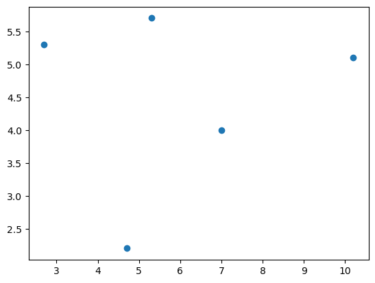
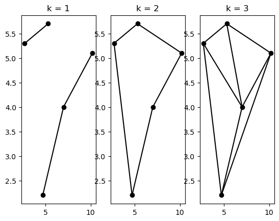
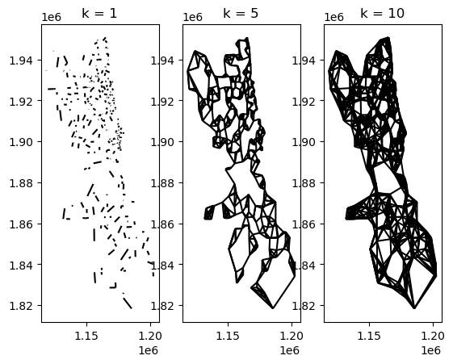
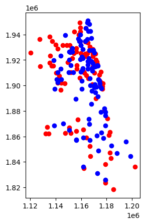
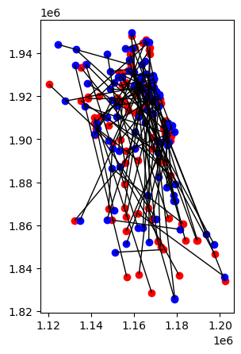

Spatial matching graph¶
Author: Levi John Wolf
Basic Usage¶
import os
import sys
sys.path.append(os.path.abspath(".."))
import geopandas
import matplotlib.pyplot as plt
import numpy as np
from libpysal.graph import Graph
points = np.vstack([(10.2, 5.1), (4.7, 2.2), (5.3, 5.7), (2.7, 5.3), (7, 4)])
gdf = geopandas.GeoDataFrame(geometry=geopandas.points_from_xy(*points.T))
plt.scatter(*points.T)
<matplotlib.collections.PathCollection at 0x7f3684f56f90>

g1 = Graph.build_spatial_matches(gdf.geometry, k=1)
g2 = Graph.build_spatial_matches(gdf.geometry, k=2)
g3 = Graph.build_spatial_matches(gdf.geometry, k=3)
Welcome to the CBC MILP Solver
Version: 2.10.3
Build Date: Dec 15 2019
command line - /home/runner/micromamba/envs/test/lib/python3.14/site-packages/pulp/apis/../solverdir/cbc/linux/i64/cbc /tmp/97c271681a0d429ea848b7cf8c34617a-pulp.mps -timeMode elapsed -branch -printingOptions all -solution /tmp/97c271681a0d429ea848b7cf8c34617a-pulp.sol (default strategy 1)
At line 2 NAME MODEL
At line 3 ROWS
At line 10 COLUMNS
At line 61 RHS
At line 67 BOUNDS
At line 78 ENDATA
Problem MODEL has 5 rows, 10 columns and 20 elements
Coin0008I MODEL read with 0 errors
Option for timeMode changed from cpu to elapsed
Continuous objective value is 8.31919 - 0.00 seconds
Cgl0004I processed model has 5 rows, 10 columns (10 integer (10 of which binary)) and 20 elements
Cbc0038I Initial state - 3 integers unsatisfied sum - 1.5
Cbc0038I Pass 1: suminf. 1.50000 (3) obj. 8.31919 iterations 1
Cbc0038I Solution found of 13.2546
Cbc0038I Rounding solution of 9.56543 is better than previous of 13.2546
Cbc0038I Before mini branch and bound, 7 integers at bound fixed and 0 continuous
Cbc0038I Full problem 5 rows 10 columns, reduced to 3 rows 3 columns
Cbc0038I Mini branch and bound did not improve solution (0.00 seconds)
Cbc0038I Round again with cutoff of 9.4408
Cbc0038I Reduced cost fixing fixed 3 variables on major pass 2
Cbc0038I Pass 2: suminf. 1.50000 (3) obj. 8.31919 iterations 0
Cbc0038I Pass 3: suminf. 0.15001 (3) obj. 9.4408 iterations 3
Cbc0038I Pass 4: suminf. 0.15001 (3) obj. 9.4408 iterations 0
Cbc0038I Pass 5: suminf. 0.28470 (3) obj. 9.4408 iterations 3
Cbc0038I Pass 6: suminf. 0.28470 (3) obj. 9.4408 iterations 0
Cbc0038I Pass 7: suminf. 0.15001 (3) obj. 9.4408 iterations 2
Cbc0038I Pass 8: suminf. 0.15001 (3) obj. 9.4408 iterations 0
Cbc0038I Pass 9: suminf. 0.15001 (3) obj. 9.4408 iterations 0
Cbc0038I Pass 10: suminf. 0.77005 (3) obj. 9.4408 iterations 1
Cbc0038I Pass 11: suminf. 0.77005 (3) obj. 9.4408 iterations 0
Cbc0038I Pass 12: suminf. 0.68375 (2) obj. 9.4408 iterations 6
Cbc0038I Pass 13: suminf. 0.13711 (1) obj. 9.4408 iterations 2
Cbc0038I Solution found of 8.93499
Cbc0038I Before mini branch and bound, 6 integers at bound fixed and 0 continuous
Cbc0038I Full problem 5 rows 10 columns, reduced to 3 rows 4 columns
Cbc0038I Mini branch and bound did not improve solution (0.00 seconds)
Cbc0038I Round again with cutoff of 8.81182
Cbc0038I Reduced cost fixing fixed 5 variables on major pass 3
Cbc0038I Pass 14: suminf. 1.50000 (3) obj. 8.31919 iterations 0
Cbc0038I Pass 15: suminf. 0.90706 (3) obj. 8.81182 iterations 3
Cbc0038I Pass 16: suminf. 0.90706 (3) obj. 8.81182 iterations 0
Cbc0038I Pass 17: suminf. 0.96622 (3) obj. 8.81182 iterations 3
Cbc0038I Pass 18: suminf. 0.96622 (3) obj. 8.81182 iterations 0
Cbc0038I Pass 19: suminf. 0.90706 (3) obj. 8.81182 iterations 2
Cbc0038I Pass 20: suminf. 0.90706 (3) obj. 8.81182 iterations 0
Cbc0038I Pass 21: suminf. 0.96622 (3) obj. 8.81182 iterations 1
Cbc0038I Pass 22: suminf. 0.90706 (3) obj. 8.81182 iterations 2
Cbc0038I Pass 23: suminf. 0.90706 (3) obj. 8.81182 iterations 0
Cbc0038I Pass 24: suminf. 0.96622 (3) obj. 8.81182 iterations 3
Cbc0038I Pass 25: suminf. 0.96622 (3) obj. 8.81182 iterations 0
Cbc0038I Pass 26: suminf. 0.96622 (3) obj. 8.81182 iterations 1
Cbc0038I Pass 27: suminf. 0.96622 (3) obj. 8.81182 iterations 1
Cbc0038I Pass 28: suminf. 0.90706 (3) obj. 8.81182 iterations 2
Cbc0038I Pass 29: suminf. 0.90706 (3) obj. 8.81182 iterations 0
Cbc0038I Pass 30: suminf. 0.96622 (3) obj. 8.81182 iterations 3
Cbc0038I Pass 31: suminf. 0.90706 (3) obj. 8.81182 iterations 1
Cbc0038I Pass 32: suminf. 0.96622 (3) obj. 8.81182 iterations 3
Cbc0038I Pass 33: suminf. 0.96622 (3) obj. 8.81182 iterations 0
Cbc0038I Pass 34: suminf. 0.90706 (3) obj. 8.81182 iterations 2
Cbc0038I Pass 35: suminf. 0.90706 (3) obj. 8.81182 iterations 0
Cbc0038I Pass 36: suminf. 0.90706 (3) obj. 8.81182 iterations 0
Cbc0038I Pass 37: suminf. 0.90706 (3) obj. 8.81182 iterations 0
Cbc0038I Pass 38: suminf. 0.96622 (3) obj. 8.81182 iterations 3
Cbc0038I Pass 39: suminf. 0.96622 (3) obj. 8.81182 iterations 0
Cbc0038I Pass 40: suminf. 0.90706 (3) obj. 8.81182 iterations 4
Cbc0038I Pass 41: suminf. 0.96622 (3) obj. 8.81182 iterations 3
Cbc0038I Pass 42: suminf. 0.96622 (3) obj. 8.81182 iterations 1
Cbc0038I Pass 43: suminf. 0.90706 (3) obj. 8.81182 iterations 3
Cbc0038I No solution found this major pass
Cbc0038I Before mini branch and bound, 7 integers at bound fixed and 0 continuous
Cbc0038I Full problem 5 rows 10 columns, reduced to 3 rows 3 columns
Cbc0038I Mini branch and bound did not improve solution (0.00 seconds)
Cbc0038I After 0.00 seconds - Feasibility pump exiting with objective of 8.93499 - took 0.00 seconds
Cbc0012I Integer solution of 8.9349905 found by feasibility pump after 0 iterations and 0 nodes (0.00 seconds)
Cbc0038I Full problem 5 rows 10 columns, reduced to 3 rows 4 columns
Cbc0006I The LP relaxation is infeasible or too expensive
Cbc0013I At root node, 0 cuts changed objective from 8.3191943 to 8.3191943 in 1 passes
Cbc0014I Cut generator 0 (Probing) - 1 row cuts average 0.0 elements, 3 column cuts (3 active) in 0.000 seconds - new frequency is 1
Cbc0014I Cut generator 1 (Gomory) - 0 row cuts average 0.0 elements, 0 column cuts (0 active) in 0.000 seconds - new frequency is -100
Cbc0014I Cut generator 2 (Knapsack) - 0 row cuts average 0.0 elements, 0 column cuts (0 active) in 0.000 seconds - new frequency is -100
Cbc0014I Cut generator 3 (Clique) - 0 row cuts average 0.0 elements, 0 column cuts (0 active) in 0.000 seconds - new frequency is -100
Cbc0014I Cut generator 4 (MixedIntegerRounding2) - 0 row cuts average 0.0 elements, 0 column cuts (0 active) in 0.000 seconds - new frequency is -100
Cbc0014I Cut generator 5 (FlowCover) - 0 row cuts average 0.0 elements, 0 column cuts (0 active) in 0.000 seconds - new frequency is -100
Cbc0014I Cut generator 6 (TwoMirCuts) - 0 row cuts average 0.0 elements, 0 column cuts (0 active) in 0.000 seconds - new frequency is -100
Cbc0014I Cut generator 7 (ZeroHalf) - 0 row cuts average 0.0 elements, 0 column cuts (0 active) in 0.000 seconds - new frequency is -100
Cbc0001I Search completed - best objective 8.934990524033001, took 0 iterations and 0 nodes (0.00 seconds)
Cbc0035I Maximum depth 0, 3 variables fixed on reduced cost
Cuts at root node changed objective from 8.31919 to 8.31919
Probing was tried 1 times and created 4 cuts of which 0 were active after adding rounds of cuts (0.000 seconds)
Gomory was tried 0 times and created 0 cuts of which 0 were active after adding rounds of cuts (0.000 seconds)
Knapsack was tried 0 times and created 0 cuts of which 0 were active after adding rounds of cuts (0.000 seconds)
Clique was tried 0 times and created 0 cuts of which 0 were active after adding rounds of cuts (0.000 seconds)
MixedIntegerRounding2 was tried 0 times and created 0 cuts of which 0 were active after adding rounds of cuts (0.000 seconds)
FlowCover was tried 0 times and created 0 cuts of which 0 were active after adding rounds of cuts (0.000 seconds)
TwoMirCuts was tried 0 times and created 0 cuts of which 0 were active after adding rounds of cuts (0.000 seconds)
ZeroHalf was tried 0 times and created 0 cuts of which 0 were active after adding rounds of cuts (0.000 seconds)
Result - Optimal solution found
Objective value: 8.93499052
Enumerated nodes: 0
Total iterations: 0
Time (CPU seconds): 0.00
Time (Wallclock seconds): 0.00
Option for printingOptions changed from normal to all
Total time (CPU seconds): 0.00 (Wallclock seconds): 0.01
Welcome to the CBC MILP Solver
Version: 2.10.3
Build Date: Dec 15 2019
command line - /home/runner/micromamba/envs/test/lib/python3.14/site-packages/pulp/apis/../solverdir/cbc/linux/i64/cbc /tmp/7284ccabe41f40ec9866a9272dc1e1bc-pulp.mps -timeMode elapsed -branch -printingOptions all -solution /tmp/7284ccabe41f40ec9866a9272dc1e1bc-pulp.sol (default strategy 1)
At line 2 NAME MODEL
At line 3 ROWS
At line 10 COLUMNS
At line 61 RHS
At line 67 BOUNDS
At line 78 ENDATA
Problem MODEL has 5 rows, 10 columns and 20 elements
Coin0008I MODEL read with 0 errors
Option for timeMode changed from cpu to elapsed
Continuous objective value is 17.5608 - 0.00 seconds
Cgl0004I processed model has 5 rows, 10 columns (10 integer (10 of which binary)) and 20 elements
Cbc0038I Initial state - 0 integers unsatisfied sum - 0
Cbc0038I Solution found of 17.5608
Cbc0038I Before mini branch and bound, 10 integers at bound fixed and 0 continuous
Cbc0038I Mini branch and bound did not improve solution (0.00 seconds)
Cbc0038I After 0.00 seconds - Feasibility pump exiting with objective of 17.5608 - took 0.00 seconds
Cbc0012I Integer solution of 17.560762 found by feasibility pump after 0 iterations and 0 nodes (0.00 seconds)
Cbc0001I Search completed - best objective 17.560761892051, took 0 iterations and 0 nodes (0.00 seconds)
Cbc0035I Maximum depth 0, 0 variables fixed on reduced cost
Cuts at root node changed objective from 17.5608 to 17.5608
Probing was tried 0 times and created 0 cuts of which 0 were active after adding rounds of cuts (0.000 seconds)
Gomory was tried 0 times and created 0 cuts of which 0 were active after adding rounds of cuts (0.000 seconds)
Knapsack was tried 0 times and created 0 cuts of which 0 were active after adding rounds of cuts (0.000 seconds)
Clique was tried 0 times and created 0 cuts of which 0 were active after adding rounds of cuts (0.000 seconds)
MixedIntegerRounding2 was tried 0 times and created 0 cuts of which 0 were active after adding rounds of cuts (0.000 seconds)
FlowCover was tried 0 times and created 0 cuts of which 0 were active after adding rounds of cuts (0.000 seconds)
TwoMirCuts was tried 0 times and created 0 cuts of which 0 were active after adding rounds of cuts (0.000 seconds)
ZeroHalf was tried 0 times and created 0 cuts of which 0 were active after adding rounds of cuts (0.000 seconds)
Result - Optimal solution found
Objective value: 17.56076189
Enumerated nodes: 0
Total iterations: 0
Time (CPU seconds): 0.00
Time (Wallclock seconds): 0.00
Option for printingOptions changed from normal to all
Total time (CPU seconds): 0.00 (Wallclock seconds): 0.00
Welcome to the CBC MILP Solver
Version: 2.10.3
Build Date: Dec 15 2019
command line - /home/runner/micromamba/envs/test/lib/python3.14/site-packages/pulp/apis/../solverdir/cbc/linux/i64/cbc /tmp/255129b41c574c4cabbda74336a093d9-pulp.mps -timeMode elapsed -branch -printingOptions all -solution /tmp/255129b41c574c4cabbda74336a093d9-pulp.sol (default strategy 1)
At line 2 NAME MODEL
At line 3 ROWS
At line 10 COLUMNS
At line 61 RHS
At line 67 BOUNDS
At line 78 ENDATA
Problem MODEL has 5 rows, 10 columns and 20 elements
Coin0008I MODEL read with 0 errors
Option for timeMode changed from cpu to elapsed
Continuous objective value is 29.6447 - 0.00 seconds
Cgl0004I processed model has 5 rows, 10 columns (10 integer (10 of which binary)) and 20 elements
Cbc0038I Initial state - 5 integers unsatisfied sum - 2.5
Cbc0038I Pass 1: suminf. 2.50000 (5) obj. 29.6447 iterations 0
Cbc0038I Solution found of 41.7286
Cbc0038I Rounding solution of 30.6749 is better than previous of 41.7286
Cbc0038I Before mini branch and bound, 5 integers at bound fixed and 0 continuous
Cbc0038I Full problem 5 rows 10 columns, reduced to 5 rows 5 columns
Cbc0038I Mini branch and bound did not improve solution (0.00 seconds)
Cbc0038I Round again with cutoff of 30.5718
Cbc0038I Reduced cost fixing fixed 3 variables on major pass 2
Cbc0038I Pass 2: suminf. 2.50000 (5) obj. 29.6447 iterations 0
Cbc0038I Pass 3: suminf. 0.25002 (5) obj. 30.5718 iterations 2
Cbc0038I Pass 4: suminf. 0.17426 (3) obj. 30.5718 iterations 1
Cbc0038I Pass 5: suminf. 0.72510 (3) obj. 30.5718 iterations 3
Cbc0038I Pass 6: suminf. 0.72510 (3) obj. 30.5718 iterations 1
Cbc0038I Pass 7: suminf. 0.17426 (3) obj. 30.5718 iterations 4
Cbc0038I Pass 8: suminf. 0.17426 (3) obj. 30.5718 iterations 0
Cbc0038I Pass 9: suminf. 0.17426 (3) obj. 30.5718 iterations 0
Cbc0038I Pass 10: suminf. 0.25002 (5) obj. 30.5718 iterations 1
Cbc0038I Pass 11: suminf. 0.25002 (5) obj. 30.5718 iterations 0
Cbc0038I Pass 12: suminf. 0.25002 (5) obj. 30.5718 iterations 0
Cbc0038I Pass 13: suminf. 1.43532 (5) obj. 30.5718 iterations 1
Cbc0038I Pass 14: suminf. 0.92188 (3) obj. 30.5718 iterations 1
Cbc0038I Pass 15: suminf. 0.17426 (3) obj. 30.5718 iterations 4
Cbc0038I Pass 16: suminf. 0.17426 (3) obj. 30.5718 iterations 0
Cbc0038I Pass 17: suminf. 0.72510 (3) obj. 30.5718 iterations 3
Cbc0038I Pass 18: suminf. 0.72510 (3) obj. 30.5718 iterations 1
Cbc0038I Pass 19: suminf. 0.17426 (3) obj. 30.5718 iterations 4
Cbc0038I Pass 20: suminf. 0.17426 (3) obj. 30.5718 iterations 0
Cbc0038I Pass 21: suminf. 0.25002 (5) obj. 30.5718 iterations 1
Cbc0038I Pass 22: suminf. 0.25002 (5) obj. 30.5718 iterations 0
Cbc0038I Pass 23: suminf. 0.17426 (3) obj. 30.5718 iterations 1
Cbc0038I Pass 24: suminf. 1.60447 (4) obj. 30.5718 iterations 2
Cbc0038I Pass 25: suminf. 1.50000 (3) obj. 29.788 iterations 1
Cbc0038I Pass 26: suminf. 0.17426 (3) obj. 30.5718 iterations 3
Cbc0038I Pass 27: suminf. 0.17426 (3) obj. 30.5718 iterations 0
Cbc0038I Pass 28: suminf. 0.72510 (3) obj. 30.5718 iterations 3
Cbc0038I Pass 29: suminf. 0.72510 (3) obj. 30.5718 iterations 1
Cbc0038I Pass 30: suminf. 0.17426 (3) obj. 30.5718 iterations 4
Cbc0038I Pass 31: suminf. 0.17426 (3) obj. 30.5718 iterations 0
Cbc0038I No solution found this major pass
Cbc0038I Before mini branch and bound, 4 integers at bound fixed and 0 continuous
Cbc0038I Full problem 5 rows 10 columns, reduced to 5 rows 6 columns
Cbc0038I Mini branch and bound did not improve solution (0.00 seconds)
Cbc0038I After 0.00 seconds - Feasibility pump exiting with objective of 30.6749 - took 0.00 seconds
Cbc0012I Integer solution of 30.674857 found by feasibility pump after 0 iterations and 0 nodes (0.00 seconds)
Cbc0038I Full problem 5 rows 10 columns, reduced to 5 rows 5 columns
Cbc0006I The LP relaxation is infeasible or too expensive
Cbc0013I At root node, 0 cuts changed objective from 29.644671 to 29.644671 in 1 passes
Cbc0014I Cut generator 0 (Probing) - 1 row cuts average 0.0 elements, 2 column cuts (2 active) in 0.000 seconds - new frequency is 1
Cbc0014I Cut generator 1 (Gomory) - 0 row cuts average 0.0 elements, 0 column cuts (0 active) in 0.000 seconds - new frequency is -100
Cbc0014I Cut generator 2 (Knapsack) - 0 row cuts average 0.0 elements, 0 column cuts (0 active) in 0.000 seconds - new frequency is -100
Cbc0014I Cut generator 3 (Clique) - 0 row cuts average 0.0 elements, 0 column cuts (0 active) in 0.000 seconds - new frequency is -100
Cbc0014I Cut generator 4 (MixedIntegerRounding2) - 0 row cuts average 0.0 elements, 0 column cuts (0 active) in 0.000 seconds - new frequency is -100
Cbc0014I Cut generator 5 (FlowCover) - 0 row cuts average 0.0 elements, 0 column cuts (0 active) in 0.000 seconds - new frequency is -100
Cbc0014I Cut generator 6 (TwoMirCuts) - 0 row cuts average 0.0 elements, 0 column cuts (0 active) in 0.000 seconds - new frequency is -100
Cbc0014I Cut generator 7 (ZeroHalf) - 0 row cuts average 0.0 elements, 0 column cuts (0 active) in 0.000 seconds - new frequency is -100
Cbc0001I Search completed - best objective 30.674857059812, took 0 iterations and 0 nodes (0.00 seconds)
Cbc0035I Maximum depth 0, 3 variables fixed on reduced cost
Cuts at root node changed objective from 29.6447 to 29.6447
Probing was tried 1 times and created 3 cuts of which 0 were active after adding rounds of cuts (0.000 seconds)
Gomory was tried 0 times and created 0 cuts of which 0 were active after adding rounds of cuts (0.000 seconds)
Knapsack was tried 0 times and created 0 cuts of which 0 were active after adding rounds of cuts (0.000 seconds)
Clique was tried 0 times and created 0 cuts of which 0 were active after adding rounds of cuts (0.000 seconds)
MixedIntegerRounding2 was tried 0 times and created 0 cuts of which 0 were active after adding rounds of cuts (0.000 seconds)
FlowCover was tried 0 times and created 0 cuts of which 0 were active after adding rounds of cuts (0.000 seconds)
TwoMirCuts was tried 0 times and created 0 cuts of which 0 were active after adding rounds of cuts (0.000 seconds)
ZeroHalf was tried 0 times and created 0 cuts of which 0 were active after adding rounds of cuts (0.000 seconds)
Result - Optimal solution found
Objective value: 30.67485706
Enumerated nodes: 0
Total iterations: 0
Time (CPU seconds): 0.00
Time (Wallclock seconds): 0.00
Option for printingOptions changed from normal to all
Total time (CPU seconds): 0.00 (Wallclock seconds): 0.00
f, ax = plt.subplots(1, 3)
for i, g in enumerate((g1, g2, g3)):
g.plot(gdf, ax=ax[i])
ax[i].set_title(f"k = {i + 1}")

Larger Problem¶
import geodatasets
stores = geopandas.read_file(geodatasets.get_path("geoda liquor_stores")).explode(
index_parts=False
)
/home/runner/micromamba/envs/test/lib/python3.14/site-packages/tqdm/auto.py:21: TqdmWarning: IProgress not found. Please update jupyter and ipywidgets. See https://ipywidgets.readthedocs.io/en/stable/user_install.html
from .autonotebook import tqdm as notebook_tqdm
Downloading file 'liquor.zip' from 'https://geodacenter.github.io/data-and-lab//data/liquor.zip' to '/home/runner/.cache/geodatasets'.
Extracting 'liq_Chicago.shp' from '/home/runner/.cache/geodatasets/liquor.zip' to '/home/runner/.cache/geodatasets/liquor.zip.unzip'
Extracting 'liq_Chicago.dbf' from '/home/runner/.cache/geodatasets/liquor.zip' to '/home/runner/.cache/geodatasets/liquor.zip.unzip'
Extracting 'liq_Chicago.shx' from '/home/runner/.cache/geodatasets/liquor.zip' to '/home/runner/.cache/geodatasets/liquor.zip.unzip'
Extracting 'liq_Chicago.prj' from '/home/runner/.cache/geodatasets/liquor.zip' to '/home/runner/.cache/geodatasets/liquor.zip.unzip'
stores.head()
| id | placeid | geometry | |
|---|---|---|---|
| 0 | 0 | ChIJnyLZdBTSD4gRbsa_hRGgPtc | POINT (1161395.91 1928443.285) |
| 1 | 3 | ChIJ5Vdx0AssDogRVjbNIyF3Mr4 | POINT (1178227.792 1881864.522) |
| 2 | 4 | ChIJb5I6QwYsDogRe8R4E9K8mkk | POINT (1178151.911 1879212.002) |
| 3 | 6 | ChIJESl0mMfMD4gRy23-8soxKuw | POINT (1141552.993 1910193.701) |
| 4 | 7 | ChIJg28YOdvMD4gRiV2lZcjSVyQ | POINT (1144074.399 1910643.753) |
stores = stores.set_index(stores.placeid)
Solving for this graph in larger data will take time. The solution technique is somewhere between \(O(n^2)\) and \(O(n^3)\) if the solver recognizes it’s a matching problem.
g1 = Graph.build_spatial_matches(stores.geometry, k=1)
g5 = Graph.build_spatial_matches(stores.geometry, k=5)
g10 = Graph.build_spatial_matches(stores.geometry, k=10)
Welcome to the CBC MILP Solver
Version: 2.10.3
Build Date: Dec 15 2019
command line - /home/runner/micromamba/envs/test/lib/python3.14/site-packages/pulp/apis/../solverdir/cbc/linux/i64/cbc /tmp/f2fbd083decb4df5a5363deeec5101f9-pulp.mps -timeMode elapsed -branch -printingOptions all -solution /tmp/f2fbd083decb4df5a5363deeec5101f9-pulp.sol (default strategy 1)
At line 2 NAME MODEL
At line 3 ROWS
At line 576 COLUMNS
At line 814248 RHS
At line 814820 BOUNDS
At line 977556 ENDATA
Problem MODEL has 571 rows, 162735 columns and 325470 elements
Coin0008I MODEL read with 0 errors
Option for timeMode changed from cpu to elapsed
Continuous objective value is 430470 - 0.57 seconds
Cgl0004I processed model has 563 rows, 161026 columns (161026 integer (159345 of which binary)) and 319229 elements
Cbc0038I Initial state - 169 integers unsatisfied sum - 84.5
Cbc0038I Pass 1: suminf. 0.00000 (0) obj. 6.63787e+06 iterations 627
Cbc0038I Solution found of 6.63787e+06
Cbc0038I Cleaned solution of 6.63787e+06
Cbc0038I Before mini branch and bound, 160691 integers at bound fixed and 0 continuous
Cbc0038I Full problem 563 rows 161026 columns, reduced to 169 rows 335 columns
Cbc0038I Mini branch and bound improved solution from 6.63787e+06 to 442869 (1.75 seconds)
Cbc0038I Round again with cutoff of 441629
Cbc0038I Reduced cost fixing fixed 141973 variables on major pass 2
Cbc0038I Pass 2: suminf. 70.47325 (142) obj. 441629 iterations 1059
Cbc0038I Pass 3: suminf. 27.07889 (56) obj. 441629 iterations 265
Cbc0038I Pass 4: suminf. 20.73185 (43) obj. 441629 iterations 159
Cbc0038I Pass 5: suminf. 17.74568 (37) obj. 441629 iterations 18
Cbc0038I Pass 6: suminf. 17.74568 (37) obj. 441629 iterations 7
Cbc0038I Pass 7: suminf. 17.74568 (37) obj. 441629 iterations 0
Cbc0038I Pass 8: suminf. 12.31934 (27) obj. 441629 iterations 69
Cbc0038I Pass 9: suminf. 12.31934 (27) obj. 441629 iterations 2
Cbc0038I Pass 10: suminf. 11.28452 (24) obj. 441629 iterations 1
Cbc0038I Pass 11: suminf. 11.28452 (24) obj. 441629 iterations 0
Cbc0038I Pass 12: suminf. 9.45272 (20) obj. 441629 iterations 34
Cbc0038I Pass 13: suminf. 8.86520 (18) obj. 441629 iterations 174
Cbc0038I Pass 14: suminf. 8.86520 (18) obj. 441629 iterations 5
Cbc0038I Pass 15: suminf. 8.86520 (18) obj. 441629 iterations 2
Cbc0038I Pass 16: suminf. 8.86520 (18) obj. 441629 iterations 0
Cbc0038I Pass 17: suminf. 8.76738 (18) obj. 441629 iterations 72
Cbc0038I Pass 18: suminf. 8.76738 (18) obj. 441629 iterations 1
Cbc0038I Pass 19: suminf. 8.76738 (18) obj. 441629 iterations 0
Cbc0038I Pass 20: suminf. 8.83999 (18) obj. 441629 iterations 60
Cbc0038I Pass 21: suminf. 8.64856 (19) obj. 441629 iterations 13
Cbc0038I Pass 22: suminf. 7.08379 (15) obj. 441629 iterations 57
Cbc0038I Pass 23: suminf. 7.08379 (15) obj. 441629 iterations 0
Cbc0038I Pass 24: suminf. 6.99751 (15) obj. 441629 iterations 545
Cbc0038I Pass 25: suminf. 6.96139 (15) obj. 441629 iterations 139
Cbc0038I Pass 26: suminf. 6.96139 (15) obj. 441629 iterations 1
Cbc0038I Pass 27: suminf. 6.96139 (15) obj. 441629 iterations 1
Cbc0038I Pass 28: suminf. 6.96139 (15) obj. 441629 iterations 0
Cbc0038I Pass 29: suminf. 5.98440 (12) obj. 441629 iterations 176
Cbc0038I Pass 30: suminf. 5.98440 (12) obj. 441629 iterations 123
Cbc0038I Pass 31: suminf. 5.98440 (12) obj. 441629 iterations 0
Cbc0038I No solution found this major pass
Cbc0038I Before mini branch and bound, 160838 integers at bound fixed and 0 continuous
Cbc0038I Full problem 563 rows 161026 columns, reduced to 169 rows 188 columns
Cbc0038I Mini branch and bound improved solution from 442869 to 440648 (3.37 seconds)
Cbc0038I Round again with cutoff of 438613
Cbc0038I Reduced cost fixing fixed 148577 variables on major pass 3
Cbc0038I Pass 31: suminf. 70.45369 (142) obj. 438613 iterations 0
Cbc0038I Pass 32: suminf. 33.93235 (69) obj. 438613 iterations 272
Cbc0038I Pass 33: suminf. 26.19950 (53) obj. 438613 iterations 95
Cbc0038I Pass 34: suminf.
21.76138 (46) obj. 438613 iterations 74
Cbc0038I Pass 35: suminf. 19.92806 (41) obj. 438613 iterations 66
Cbc0038I Pass 36: suminf. 19.92806 (41) obj. 438613 iterations 0
Cbc0038I Pass 37: suminf. 15.28038 (33) obj. 438613 iterations 19
Cbc0038I Pass 38: suminf. 15.28038 (33) obj. 438613 iterations 3
Cbc0038I Pass 39: suminf. 13.89655 (30) obj. 438613 iterations 2
Cbc0038I Pass 40: suminf. 13.89655 (30) obj. 438613 iterations 1
Cbc0038I Pass 41: suminf. 13.89655 (30) obj. 438613 iterations 1
Cbc0038I Pass 42: suminf. 11.10713 (24) obj. 438613 iterations 8
Cbc0038I Pass 43: suminf. 11.10713 (24) obj. 438613 iterations 7
Cbc0038I Pass 44: suminf. 11.10713 (24) obj. 438613 iterations 1
Cbc0038I Pass 45: suminf. 11.10713 (24) obj. 438613 iterations 0
Cbc0038I Pass 46: suminf. 9.70830 (21) obj. 438613 iterations 162
Cbc0038I Pass 47: suminf. 9.70830 (21) obj. 438613 iterations 4
Cbc0038I Pass 48: suminf. 9.62388 (21) obj. 438613 iterations 8
Cbc0038I Pass 49: suminf. 9.62388 (21) obj. 438613 iterations 0
Cbc0038I Pass 50: suminf. 8.25390 (18) obj. 438613 iterations 295
Cbc0038I Pass 51: suminf. 8.25390 (18) obj. 438613 iterations 2
Cbc0038I Pass 52: suminf. 8.25390 (18) obj. 438613 iterations 1
Cbc0038I Pass 53: suminf. 8.48328 (18) obj. 438613 iterations 297
Cbc0038I Pass 54: suminf. 8.48328 (18) obj. 438613 iterations 4
Cbc0038I Pass 55: suminf. 8.48328 (18) obj. 438613 iterations 2
Cbc0038I Pass 56: suminf. 8.48328 (18) obj. 438613 iterations 0
Cbc0038I Pass 57: suminf. 8.09924 (18) obj. 438613 iterations 292
Cbc0038I Pass 58: suminf. 8.08654 (18) obj. 438613 iterations 159
Cbc0038I Pass 59: suminf. 8.08654 (18) obj. 438613 iterations 3
Cbc0038I Pass 60: suminf. 8.08654 (18) obj. 438613 iterations 3
Cbc0038I No solution found this major pass
Cbc0038I Before mini branch and bound, 160839 integers at bound fixed and 0 continuous
Cbc0038I Full problem 563 rows 161026 columns, reduced to 169 rows 187 columns
Cbc0038I Mini branch and bound did not improve solution (4.88 seconds)
Cbc0038I After 4.88 seconds - Feasibility pump exiting with objective of 440648 - took 3.52 seconds
Cbc0012I Integer solution of 440648.14 found by feasibility pump after 0 iterations and 0 nodes (4.90 seconds)
Cbc0038I Full problem 563 rows 161026 columns, reduced to 169 rows 174 columns
Cbc0013I At root node, 0 cuts changed objective from 430470.12 to 430470.12 in 1 passes
Cbc0014I Cut generator 0 (Probing) - 0 row cuts average 0.0 elements, 0 column cuts (0 active) in 0.018 seconds - new frequency is -100
Cbc0014I Cut generator 1 (Gomory) - 0 row cuts average 0.0 elements, 0 column cuts (0 active) in 0.070 seconds - new frequency is -100
Cbc0014I Cut generator 2 (Knapsack) - 0 row cuts average 0.0 elements, 0 column cuts (0 active) in 0.015 seconds - new frequency is -100
Cbc0014I Cut generator 3 (Clique) - 0 row cuts average 0.0 elements, 0 column cuts (0 active) in 0.001 seconds - new frequency is -100
Cbc0014I Cut generator 4 (MixedIntegerRounding2) - 0 row cuts average 0.0 elements, 0 column cuts (0 active) in 0.010 seconds - new frequency is -100
Cbc0014I Cut generator 5 (FlowCover) - 0 row cuts average 0.0 elements, 0 column cuts (0 active) in 0.002 seconds - new frequency is -100
Cbc0010I After 0 nodes, 1 on tree, 440648.14 best solution, best possible 430470.12 (7.04 seconds)
Cbc0038I Full problem 563 rows 161026 columns, reduced to 151 rows 159 columns
Cbc0038I Full problem 563 rows 161026 columns, reduced to 563 rows 16718 columns
Cbc0044I Reduced cost fixing - 563 rows, 16718 columns - restarting search
Cbc0012I Integer solution of 440648.14 found by Previous solution after 0 iterations and 0 nodes (15.86 seconds)
Cbc0038I Full problem 563 rows 16718 columns, reduced to 169 rows 174 columns
Cbc0012I Integer solution of 439715.51 found by DiveCoefficient after 74 iterations and 0 nodes (16.24 seconds)
Cbc0031I 50 added rows had average density of 283.88
Cbc0013I At root node, 50 cuts changed objective from 430470.12 to 438591.13 in 3 passes
Cbc0014I Cut generator 0 (Probing) - 1 row cuts average 7.0 elements, 3 column cuts (3 active) in 0.010 seconds - new frequency is 1
Cbc0014I Cut generator 1 (Gomory) - 53 row cuts average 317.0 elements, 0 column cuts (0 active) in 0.018 seconds - new frequency is 1
Cbc0014I Cut generator 2 (Knapsack) - 0 row cuts average 0.0 elements, 0 column cuts (0 active) in 0.008 seconds - new frequency is -100
Cbc0014I Cut generator 3 (Clique) - 0 row cuts average 0.0 elements, 0 column cuts (0 active) in 0.001 seconds - new frequency is -100
Cbc0014I Cut generator 4 (MixedIntegerRounding2) - 0 row cuts average 0.0 elements, 0 column cuts (0 active) in 0.005 seconds - new frequency is -100
Cbc0014I Cut generator 5 (FlowCover) - 0 row cuts average 0.0 elements, 0 column cuts (0 active) in 0.001 seconds - new frequency is -100
Cbc0014I Cut generator 6 (TwoMirCuts) - 48 row cuts average 213.4 elements, 0 column cuts (0 active) in 0.028 seconds - new frequency is -100
Cbc0014I Cut generator 7 (ZeroHalf) - 0 row cuts average 0.0 elements, 0 column cuts (0 active) in 0.012 seconds - new frequency is -100
Cbc0010I After 0 nodes, 1 on tree, 439715.51 best solution, best possible 438620.77 (16.26 seconds)
Cbc0012I Integer solution of 439371.78 found by rounding after 79 iterations and 1 nodes (16.26 seconds)
Cbc0016I Integer solution of 439318.34 found by strong branching after 91 iterations and 2 nodes (16.31 seconds)
Cbc0012I Integer solution of 438796.43 found by rounding after 92 iterations and 3 nodes (16.31 seconds)
Cbc0012I Integer solution of 438776.33 found by DiveCoefficient after 92 iterations and 3 nodes (16.33 seconds)
Cbc0016I Integer solution of 438772.54 found by strong branching after 100 iterations and 3 nodes (16.34 seconds)
Cbc0001I Search completed - best objective 438772.5370138467, took 101 iterations and 4 nodes (16.34 seconds)
Cbc0032I Strong branching done 42 times (105 iterations), fathomed 2 nodes and fixed 1 variables
Cbc0035I Maximum depth 1, 16507 variables fixed on reduced cost
Cbc0038I Probing was tried 6 times and created 7 cuts of which 0 were active after adding rounds of cuts (0.013 seconds)
Cbc0038I Gomory was tried 6 times and created 53 cuts of which 0 were active after adding rounds of cuts (0.020 seconds)
Cbc0038I Knapsack was tried 3 times and created 0 cuts of which 0 were active after adding rounds of cuts (0.008 seconds)
Cbc0038I Clique was tried 3 times and created 0 cuts of which 0 were active after adding rounds of cuts (0.001 seconds)
Cbc0038I MixedIntegerRounding2 was tried 3 times and created 0 cuts of which 0 were active after adding rounds of cuts (0.005 seconds)
Cbc0038I FlowCover was tried 3 times and created 0 cuts of which 0 were active after adding rounds of cuts (0.001 seconds)
Cbc0038I TwoMirCuts was tried 3 times and created 48 cuts of which 0 were active after adding rounds of cuts (0.028 seconds)
Cbc0038I ZeroHalf was tried 3 times and created 0 cuts of which 0 were active after adding rounds of cuts (0.012 seconds)
Cbc0012I Integer solution of 438772.54 found by Reduced search after 198 iterations and 54 nodes (16.41 seconds)
Cbc0001I Search completed - best objective 438772.5370138467, took 198 iterations and 54 nodes (16.41 seconds)
Cbc0032I Strong branching done 792 times (1425 iterations), fathomed 0 nodes and fixed 0 variables
Cbc0035I Maximum depth 14, 203286 variables fixed on reduced cost
Cuts at root node changed objective from 430470 to 430470
Probing was tried 1 times and created 0 cuts of which 0 were active after adding rounds of cuts (0.018 seconds)
Gomory was tried 1 times and created 0 cuts of which 0 were active after adding rounds of cuts (0.070 seconds)
Knapsack was tried 1 times and created 0 cuts of which 0 were active after adding rounds of cuts (0.015 seconds)
Clique was tried 1 times and created 0 cuts of which 0 were active after adding rounds of cuts (0.001 seconds)
MixedIntegerRounding2 was tried 1 times and created 0 cuts of which 0 were active after adding rounds of cuts (0.010 seconds)
FlowCover was tried 1 times and created 0 cuts of w
hich 0 were active after adding rounds of cuts (0.002 seconds)
TwoMirCuts was tried 1 times and created 0 cuts of which 0 were active after adding rounds of cuts (0.112 seconds)
ZeroHalf was tried 1 times and created 0 cuts of which 0 were active after adding rounds of cuts (0.080 seconds)
Result - Optimal solution found
Objective value: 438772.53701385
Enumerated nodes: 54
Total iterations: 198
Time (CPU seconds): 16.31
Time (Wallclock seconds): 16.57
Option for printingOptions changed from normal to all
Total time (CPU seconds): 16.62 (Wallclock seconds): 16.91
Welcome to the CBC MILP Solver
Version: 2.10.3
Build Date: Dec 15 2019
command line - /home/runner/micromamba/envs/test/lib/python3.14/site-packages/pulp/apis/../solverdir/cbc/linux/i64/cbc /tmp/f75c75e1dead46a09120814d577ba2d7-pulp.mps -timeMode elapsed -branch -printingOptions all -solution /tmp/f75c75e1dead46a09120814d577ba2d7-pulp.sol (default strategy 1)
At line 2 NAME MODEL
At line 3 ROWS
At line 576 COLUMNS
At line 814248 RHS
At line 814820 BOUNDS
At line 977556 ENDATA
Problem MODEL has 571 rows, 162735 columns and 325470 elements
Coin0008I MODEL read with 0 errors
Option for timeMode changed from cpu to elapsed
Continuous objective value is 3.87217e+06 - 0.44 seconds
Cgl0004I processed model has 571 rows, 162731 columns (162731 integer (162731 of which binary)) and 325462 elements
Cbc0038I Initial state - 69 integers unsatisfied sum - 34.5
Cbc0038I Pass 1: suminf. 6.50000 (13) obj. 4.92963e+06 iterations 1415
Cbc0038I Pass 2: suminf. 6.50000 (13) obj. 4.92963e+06 iterations 174
Cbc0038I Solution found of 5.16945e+06
Cbc0038I Rounding solution of 4.89362e+06 is better than previous of 5.16945e+06
Cbc0038I Before mini branch and bound, 162623 integers at bound fixed and 0 continuous
Cbc0038I Full problem 571 rows 162731 columns, reduced to 69 rows 108 columns
Cbc0038I Mini branch and bound improved solution from 4.89362e+06 to 3.88522e+06 (1.99 seconds)
Cbc0038I Round again with cutoff of 3.88392e+06
Cbc0038I Reduced cost fixing fixed 137600 variables on major pass 2
Cbc0038I Pass 3: suminf. 18.77986 (39) obj. 3.88392e+06 iterations 640
Cbc0038I Pass 4: suminf. 12.20133 (29) obj. 3.88392e+06 iterations 629
Cbc0038I Pass 5: suminf. 10.58346 (23) obj. 3.88392e+06 iterations 66
Cbc0038I Pass 6: suminf. 7.64484 (17) obj. 3.88392e+06 iterations 23
Cbc0038I Pass 7: suminf. 6.12336 (14) obj. 3.88392e+06 iterations 20
Cbc0038I Pass 8: suminf. 5.13475 (12) obj. 3.88392e+06 iterations 646
Cbc0038I Pass 9: suminf. 5.13475 (12) obj. 3.88392e+06 iterations 14
Cbc0038I Pass 10: suminf. 5.13475 (12) obj. 3.88392e+06 iterations 15
Cbc0038I Pass 11: suminf. 5.13475 (12) obj. 3.88392e+06 iterations 12
Cbc0038I Pass 12: suminf. 5.13475 (12) obj. 3.88392e+06 iterations 3
Cbc0038I Pass 13: suminf. 5.13475 (12) obj. 3.88392e+06 iterations 87
Cbc0038I Pass 14: suminf. 5.13475 (12) obj. 3.88392e+06 iterations 83
Cbc0038I Pass 15: suminf. 5.13475 (12) obj. 3.88392e+06 iterations 6
Cbc0038I Pass 16: suminf. 5.28996 (12) obj. 3.88392e+06 iterations 263
Cbc0038I Pass 17: suminf. 4.88722 (12) obj. 3.88392e+06 iterations 144
Cbc0038I Pass 18: suminf. 2.25967 (6) obj. 3.88392e+06 iterations 15
Cbc0038I Pass 19: suminf. 2.25967 (6) obj. 3.88392e+06 iterations 16
Cbc0038I Pass 20: suminf. 2.25967 (6) obj. 3.88392e+06 iterations 4
Cbc0038I Pass 21: suminf. 2.25967 (6) obj. 3.88392e+06 iterations 7
Cbc0038I Pass 22: suminf. 2.25967 (6) obj. 3.88392e+06 iterations 51
Cbc0038I Pass 23: suminf. 3.36710 (7) obj. 3.88392e+06 iterations 216
Cbc0038I Pass 24: suminf. 2.51308 (6) obj. 3.88392e+06 iterations 1068
Cbc0038I Pass 25: suminf. 2.51308 (6) obj. 3.88392e+06 iterations 1
Cbc0038I Pass 26: suminf. 2.25967 (6) obj. 3.88392e+06 iterations 556
Cbc0038I Pass 27: suminf. 2.21855 (6) obj. 3.88392e+06 iterations 350
Cbc0038I Pass 28: suminf. 2.21855 (6) obj. 3.88392e+06 iterations 75
Cbc0038I Pass 29: suminf. 2.70653 (6) obj. 3.88392e+06 iterations 418
Cbc0038I Pass 30: suminf. 2.21855 (6) obj. 3.88392e+06 iterations 270
Cbc0038I Pass 31: suminf. 2.21855 (6) obj. 3.88392e+06 iterations 0
Cbc0038I Pass 32: suminf. 2.21855 (6) obj. 3.88392e+06 iterations 0
Cbc0038I No solution found this major pass
Cbc0038I Before mini branch and bound, 162639 integers at bound fixed and 0 continuous
Cbc0038I Full problem 571 rows 162731 columns, reduced to 72 rows 91 columns
Cbc0038I Mini branch and bound improved solution from 3.88522e+06 to 3.88459e+06 (4.43 seconds)
Cbc0038I Round again with cutoff of 3.88157e+06
Cbc0038I Redu
ced cost fixing fixed 143697 variables on major pass 3
Cbc0038I Pass 32: suminf. 16.72843 (40) obj. 3.88157e+06 iterations 12
Cbc0038I Pass 33: suminf. 12.10154 (27) obj. 3.88157e+06 iterations 578
Cbc0038I Pass 34: suminf. 11.24882 (24) obj. 3.88157e+06 iterations 65
Cbc0038I Pass 35: suminf. 9.42482 (21) obj. 3.88157e+06 iterations 193
Cbc0038I Pass 36: suminf. 7.08795 (15) obj. 3.88157e+06 iterations 44
Cbc0038I Pass 37: suminf. 6.46574 (19) obj. 3.88157e+06 iterations 66
Cbc0038I Pass 38: suminf. 5.82133 (16) obj. 3.88157e+06 iterations 8
Cbc0038I Pass 39: suminf. 4.34217 (9) obj. 3.88157e+06 iterations 532
Cbc0038I Pass 40: suminf. 4.24705 (9) obj. 3.88157e+06 iterations 125
Cbc0038I Pass 41: suminf. 4.24705 (9) obj. 3.88157e+06 iterations 7
Cbc0038I Pass 42: suminf. 4.28799 (9) obj. 3.88157e+06 iterations 466
Cbc0038I Pass 43: suminf. 4.28799 (9) obj. 3.88157e+06 iterations 20
Cbc0038I Pass 44: suminf. 4.19176 (9) obj. 3.88157e+06 iterations 130
Cbc0038I Pass 45: suminf. 4.15289 (9) obj. 3.88157e+06 iterations 3
Cbc0038I Pass 46: suminf. 4.15289 (9) obj. 3.88157e+06 iterations 3
Cbc0038I Pass 47: suminf. 4.15289 (9) obj. 3.88157e+06 iterations 8
Cbc0038I Pass 48: suminf. 4.15289 (9) obj. 3.88157e+06 iterations 5
Cbc0038I Pass 49: suminf. 6.67989 (15) obj. 3.88157e+06 iterations 176
Cbc0038I Pass 50: suminf. 6.67989 (15) obj. 3.88157e+06 iterations 60
Cbc0038I Pass 51: suminf. 6.67989 (15) obj. 3.88157e+06 iterations 19
Cbc0038I Pass 52: suminf. 6.67989 (15) obj. 3.88157e+06 iterations 12
Cbc0038I Pass 53: suminf. 6.16613 (15) obj. 3.88157e+06 iterations 94
Cbc0038I Pass 54: suminf. 4.98727 (12) obj. 3.88157e+06 iterations 88
Cbc0038I Pass 55: suminf. 4.98727 (12) obj. 3.88157e+06 iterations 3
Cbc0038I Pass 56: suminf. 4.98727 (12) obj. 3.88157e+06 iterations 60
Cbc0038I Pass 57: suminf. 4.98727 (12) obj. 3.88157e+06 iterations 99
Cbc0038I Pass 58: suminf. 4.98727 (12) obj. 3.88157e+06 iterations 52
Cbc0038I Pass 59: suminf. 4.98727 (12) obj. 3.88157e+06 iterations 13
Cbc0038I Pass 60: suminf. 6.00000 (14) obj. 3.88157e+06 iterations 158
Cbc0038I Pass 61: suminf. 5.30545 (12) obj. 3.88157e+06 iterations 360
Cbc0038I No solution found this major pass
Cbc0038I Before mini branch and bound, 162630 integers at bound fixed and 0 continuous
Cbc0038I Full problem 571 rows 162731 columns, reduced to 81 rows 101 columns
Cbc0038I Mini branch and bound improved solution from 3.88459e+06 to 3.88274e+06 (6.50 seconds)
Cbc0038I Round again with cutoff of 3.87875e+06
Cbc0038I Reduced cost fixing fixed 150067 variables on major pass 4
Cbc0038I Pass 61: suminf. 19.28749 (40) obj. 3.87875e+06 iterations 0
Cbc0038I Pass 62: suminf. 12.30685 (27) obj. 3.87875e+06 iterations 540
Cbc0038I Pass 63: suminf. 11.74921 (26) obj. 3.87875e+06 iterations 71
Cbc0038I Pass 64: suminf. 9.95766 (21) obj. 3.87875e+06 iterations 64
Cbc0038I Pass 65: suminf. 9.95766 (21) obj. 3.87875e+06 iterations 48
Cbc0038I Pass 66: suminf. 9.95766 (21) obj. 3.87875e+06 iterations 40
Cbc0038I Pass 67: suminf. 8.73167 (18) obj. 3.87875e+06 iterations 42
Cbc0038I Pass 68: suminf. 8.73167 (18) obj. 3.87875e+06 iterations 20
Cbc0038I Pass 69: suminf. 8.73167 (18) obj. 3.87875e+06 iterations 13
Cbc0038I Pass 70: suminf. 8.73167 (18) obj. 3.87875e+06 iterations 17
Cbc0038I Pass 71: suminf. 8.73167 (18) obj. 3.87875e+06 iterations 20
Cbc0038I Pass 72: suminf. 8.73167 (18) obj. 3.87875e+06 iterations 18
Cbc0038I Pass 73: suminf. 9.54344 (21) obj. 3.87875e+06 iterations 147
Cbc0038I Pass 74: suminf. 8.77753 (18) obj. 3.87875e+06 iterations 80
Cbc0038I Pass 75: suminf. 8.77753 (18) obj. 3.87875e+06 iterations 2
Cbc0038I Pass 76: suminf. 7.39041 (15) obj. 3.87875e+06 iterations 86
Cbc0038I Pass 77: suminf. 7.39041 (15) obj. 3.87875e+06 iterations 36
Cbc0038I Pass 78: suminf. 7.37504 (15) obj. 3.87875e+06 iterations 36
Cbc0038I Pass 79: suminf. 7.37504 (15) obj. 3.87875e+06 iterations 13
Cbc
0038I Pass 80: suminf. 7.37504 (15) obj. 3.87875e+06 iterations 4
Cbc0038I Pass 81: suminf. 7.50000 (17) obj. 3.87875e+06 iterations 259
Cbc0038I Pass 82: suminf. 7.09785 (15) obj. 3.87875e+06 iterations 379
Cbc0038I Pass 83: suminf. 7.09785 (15) obj. 3.87875e+06 iterations 26
Cbc0038I Pass 84: suminf. 7.09785 (15) obj. 3.87875e+06 iterations 18
Cbc0038I Pass 85: suminf. 7.09785 (15) obj. 3.87875e+06 iterations 8
Cbc0038I Pass 86: suminf. 7.09785 (15) obj. 3.87875e+06 iterations 7
Cbc0038I Pass 87: suminf. 7.44715 (16) obj. 3.87875e+06 iterations 246
Cbc0038I Pass 88: suminf. 7.32933 (15) obj. 3.87875e+06 iterations 208
Cbc0038I Pass 89: suminf. 7.21999 (15) obj. 3.87875e+06 iterations 145
Cbc0038I Pass 90: suminf. 7.21999 (15) obj. 3.87875e+06 iterations 12
Cbc0038I No solution found this major pass
Cbc0038I Before mini branch and bound, 162640 integers at bound fixed and 0 continuous
Cbc0038I Full problem 571 rows 162731 columns, reduced to 72 rows 90 columns
Cbc0038I Mini branch and bound did not improve solution (8.27 seconds)
Cbc0038I After 8.27 seconds - Feasibility pump exiting with objective of 3.88274e+06 - took 7.06 seconds
Cbc0012I Integer solution of 3882735.5 found by feasibility pump after 0 iterations and 0 nodes (8.29 seconds)
Cbc0038I Full problem 571 rows 162731 columns, reduced to 70 rows 73 columns
Cbc0013I At root node, 0 cuts changed objective from 3872170 to 3872170 in 1 passes
Cbc0014I Cut generator 0 (Probing) - 0 row cuts average 0.0 elements, 0 column cuts (0 active) in 0.020 seconds - new frequency is -100
Cbc0014I Cut generator 1 (Gomory) - 0 row cuts average 0.0 elements, 0 column cuts (0 active) in 0.039 seconds - new frequency is -100
Cbc0014I Cut generator 2 (Knapsack) - 0 row cuts average 0.0 elements, 0 column cuts (0 active) in 0.013 seconds - new frequency is -100
Cbc0014I Cut generator 3 (Clique) - 0 row cuts average 0.0 elements, 0 column cuts (0 active) in 0.001 seconds - new frequency is -100
Cbc0014I Cut generator 4 (MixedIntegerRounding2) - 0 row cuts average 0.0 elements, 0 column cuts (0 active) in 0.011 seconds - new frequency is -100
Cbc0014I Cut generator 5 (FlowCover) - 0 row cuts average 0.0 elements, 0 column cuts (0 active) in 0.002 seconds - new frequency is -100
Cbc0010I After 0 nodes, 1 on tree, 3882735.5 best solution, best possible 3872170 (9.37 seconds)
Cbc0012I Integer solution of 3881308.7 found by DiveCoefficient after 82 iterations and 18 nodes (12.42 seconds)
Cbc0038I Full problem 571 rows 162731 columns, reduced to 50 rows 53 columns
Cbc0038I Full problem 571 rows 162731 columns, reduced to 571 rows 18471 columns
Cbc0044I Reduced cost fixing - 571 rows, 18471 columns - restarting search
Cbc0012I Integer solution of 3881308.7 found by Previous solution after 0 iterations and 0 nodes (14.22 seconds)
Cbc0038I Full problem 571 rows 18471 columns, reduced to 102 rows 112 columns
Cbc0012I Integer solution of 3880067 found by DiveCoefficient after 59 iterations and 0 nodes (14.59 seconds)
Cbc0031I 15 added rows had average density of 758.06667
Cbc0013I At root node, 15 cuts changed objective from 3872170 to 3873565 in 3 passes
Cbc0014I Cut generator 0 (Probing) - 0 row cuts average 0.0 elements, 0 column cuts (0 active) in 0.018 seconds - new frequency is -100
Cbc0014I Cut generator 1 (Gomory) - 13 row cuts average 831.4 elements, 0 column cuts (0 active) in 0.038 seconds - new frequency is -100
Cbc0014I Cut generator 2 (Knapsack) - 0 row cuts average 0.0 elements, 0 column cuts (0 active) in 0.005 seconds - new frequency is -100
Cbc0014I Cut generator 3 (Clique) - 0 row cuts average 0.0 elements, 0 column cuts (0 active) in 0.001 seconds - new frequency is -100
Cbc0014I Cut generator 4 (MixedIntegerRounding2) - 0 row cuts average 0.0 elements, 0 column cuts (0 active) in 0.007 seconds - new frequency is -100
Cbc0014I Cut generator 5 (FlowCover) - 0 row cuts average 0.0 elements, 0 column cuts (0 active) in 0.001 seconds - new frequency is -100
Cbc0014I Cut generator 6 (TwoMirCuts) - 6 row cuts average 301.8 e
lements, 0 column cuts (0 active) in 0.030 seconds - new frequency is -100
Cbc0014I Cut generator 7 (ZeroHalf) - 0 row cuts average 0.0 elements, 0 column cuts (0 active) in 0.013 seconds - new frequency is -100
Cbc0010I After 0 nodes, 1 on tree, 3880067 best solution, best possible 3873565 (14.61 seconds)
Cbc0012I Integer solution of 3878536.7 found by DiveCoefficient after 70 iterations and 2 nodes (14.68 seconds)
Cbc0012I Integer solution of 3876766.3 found by DiveCoefficient after 79 iterations and 5 nodes (14.99 seconds)
Cbc0038I Full problem 571 rows 18471 columns, reduced to 45 rows 48 columns
Cbc0038I Full problem 571 rows 18471 columns, reduced to 51 rows 56 columns
Cbc0010I After 100 nodes, 55 on tree, 3876766.3 best solution, best possible 3873565 (16.41 seconds)
Cbc0012I Integer solution of 3876735.3 found by rounding after 1068 iterations and 196 nodes (16.73 seconds)
Cbc0012I Integer solution of 3876643.8 found by rounding after 1082 iterations and 200 nodes (16.74 seconds)
Cbc0038I Full problem 571 rows 18471 columns, reduced to 9 rows 9 columns
Cbc0010I After 200 nodes, 106 on tree, 3876643.8 best solution, best possible 3873565 (16.83 seconds)
Cbc0012I Integer solution of 3876592.9 found by rounding after 1588 iterations and 293 nodes (17.12 seconds)
Cbc0012I Integer solution of 3876566.5 found by rounding after 1609 iterations and 296 nodes (17.13 seconds)
Cbc0038I Full problem 571 rows 18471 columns, reduced to 16 rows 17 columns
Cbc0010I After 300 nodes, 156 on tree, 3876566.5 best solution, best possible 3873565 (17.24 seconds)
Cbc0004I Integer solution of 3875413.3 found after 2100 iterations and 383 nodes (17.50 seconds)
Cbc0038I Full problem 571 rows 18471 columns, reduced to 51 rows 57 columns
Cbc0010I After 400 nodes, 148 on tree, 3875413.3 best solution, best possible 3873565 (17.71 seconds)
Cbc0012I Integer solution of 3875312.3 found by rounding after 2396 iterations and 456 nodes (17.88 seconds)
Cbc0012I Integer solution of 3875060 found by rounding after 2443 iterations and 464 nodes (17.92 seconds)
Cbc0010I After 500 nodes, 82 on tree, 3875060 best solution, best possible 3873565 (18.00 seconds)
Cbc0004I Integer solution of 3875009.1 found after 2564 iterations and 505 nodes (18.01 seconds)
Cbc0004I Integer solution of 3874841.8 found after 2598 iterations and 515 nodes (18.04 seconds)
Cbc0004I Integer solution of 3874816.6 found after 2607 iterations and 520 nodes (18.06 seconds)
Cbc0010I After 600 nodes, 50 on tree, 3874816.6 best solution, best possible 3873565 (18.24 seconds)
Cbc0038I Full problem 571 rows 18471 columns, reduced to 45 rows 49 columns
Cbc0010I After 700 nodes, 55 on tree, 3874816.6 best solution, best possible 3873565 (18.70 seconds)
Cbc0004I Integer solution of 3874801.1 found after 3432 iterations and 759 nodes (18.84 seconds)
Cbc0004I Integer solution of 3874775.9 found after 3441 iterations and 764 nodes (18.85 seconds)
Cbc0010I After 800 nodes, 42 on tree, 3874775.9 best solution, best possible 3873565 (18.93 seconds)
Cbc0038I Full problem 571 rows 18471 columns, reduced to 47 rows 50 columns
Cbc0010I After 900 nodes, 39 on tree, 3874775.9 best solution, best possible 3873565 (19.26 seconds)
Cbc0010I After 1000 nodes, 24 on tree, 3874775.9 best solution, best possible 3873565 (19.45 seconds)
Cbc0010I After 1100 nodes, 18 on tree, 3874775.9 best solution, best possible 3873565 (19.72 seconds)
Cbc0038I Full problem 571 rows 18471 columns, reduced to 34 rows 39 columns
Cbc0012I Integer solution of 3874516.9 found by RINS after 4777 iterations and 1200 nodes (20.11 seconds)
Cbc0010I After 1200 nodes, 22 on tree, 3874516.9 best solution, best possible 3873565 (20.11 seconds)
Cbc0010I After 1300 nodes, 41 on tree, 3874516.9 best solution, best possible 3873565 (20.68 seconds)
Cbc0010I After 1400 nodes, 28 on tree, 3874516.9 best solution, best possible 3873565 (21.04 seconds)
Cbc0010I After 1500 nodes, 8 on tree, 3874516.9 best solution, best possible 3873565 (21.72 seconds)
Cbc0010I After 1600 nodes, 58 on tree, 3874516.9 best solution, best possible 3873565 (22.54 se
conds)
Cbc0010I After 1700 nodes, 107 on tree, 3874516.9 best solution, best possible 3873565 (23.00 seconds)
Cbc0038I Full problem 571 rows 18471 columns, reduced to 69 rows 76 columns
Cbc0010I After 1800 nodes, 148 on tree, 3874516.9 best solution, best possible 3873565 (23.55 seconds)
Cbc0010I After 1900 nodes, 184 on tree, 3874516.9 best solution, best possible 3873565 (24.02 seconds)
Cbc0012I Integer solution of 3874434.5 found by rounding after 7520 iterations and 1912 nodes (24.09 seconds)
Cbc0016I Integer solution of 3874319.6 found by strong branching after 7522 iterations and 1913 nodes (24.10 seconds)
Cbc0004I Integer solution of 3874294.4 found after 7524 iterations and 1914 nodes (24.12 seconds)
Cbc0010I After 2000 nodes, 28 on tree, 3874294.4 best solution, best possible 3873565 (24.40 seconds)
Cbc0010I After 2100 nodes, 19 on tree, 3874294.4 best solution, best possible 3873565 (25.74 seconds)
Cbc0012I Integer solution of 3874254.7 found by rounding after 8524 iterations and 2140 nodes (26.11 seconds)
Cbc0016I Integer solution of 3874252.8 found by strong branching after 8889 iterations and 2191 nodes (26.47 seconds)
Cbc0016I Integer solution of 3874188.2 found by strong branching after 8900 iterations and 2193 nodes (26.48 seconds)
Cbc0010I After 2200 nodes, 26 on tree, 3874188.2 best solution, best possible 3873565 (26.51 seconds)
Cbc0010I After 2300 nodes, 12 on tree, 3874188.2 best solution, best possible 3873565 (27.32 seconds)
Cbc0004I Integer solution of 3874156.1 found after 9920 iterations and 2370 nodes (27.97 seconds)
Cbc0016I Integer solution of 3874081.5 found by strong branching after 9932 iterations and 2374 nodes (27.98 seconds)
Cbc0010I After 2400 nodes, 7 on tree, 3874081.5 best solution, best possible 3873565 (28.08 seconds)
Cbc0001I Search completed - best objective 3874081.529125785, took 10423 iterations and 2450 nodes (29.29 seconds)
Cbc0032I Strong branching done 3940 times (13664 iterations), fathomed 210 nodes and fixed 222 variables
Cbc0035I Maximum depth 41, 385962 variables fixed on reduced cost
Cbc0038I Probing was tried 3 times and created 0 cuts of which 0 were active after adding rounds of cuts (0.018 seconds)
Cbc0038I Gomory was tried 3 times and created 13 cuts of which 0 were active after adding rounds of cuts (0.038 seconds)
Cbc0038I Knapsack was tried 3 times and created 0 cuts of which 0 were active after adding rounds of cuts (0.005 seconds)
Cbc0038I Clique was tried 3 times and created 0 cuts of which 0 were active after adding rounds of cuts (0.001 seconds)
Cbc0038I MixedIntegerRounding2 was tried 3 times and created 0 cuts of which 0 were active after adding rounds of cuts (0.007 seconds)
Cbc0038I FlowCover was tried 3 times and created 0 cuts of which 0 were active after adding rounds of cuts (0.001 seconds)
Cbc0038I TwoMirCuts was tried 3 times and created 6 cuts of which 0 were active after adding rounds of cuts (0.030 seconds)
Cbc0038I ZeroHalf was tried 3 times and created 0 cuts of which 0 were active after adding rounds of cuts (0.013 seconds)
Cbc0012I Integer solution of 3874081.5 found by Reduced search after 10668 iterations and 2500 nodes (29.36 seconds)
Cbc0001I Search completed - best objective 3874081.529125785, took 10668 iterations and 2500 nodes (29.36 seconds)
Cbc0032I Strong branching done 800 times (3103 iterations), fathomed 0 nodes and fixed 0 variables
Cbc0035I Maximum depth 25, 172181 variables fixed on reduced cost
Cuts at root node changed objective from 3.87217e+06 to 3.87217e+06
Probing was tried 1 times and created 0 cuts of which 0 were active after adding rounds of cuts (0.020 seconds)
Gomory was tried 1 times and created 0 cuts of which 0 were active after adding rounds of cuts (0.039 seconds)
Knapsack was tried 1 times and created 0 cuts of which 0 were active after adding rounds of cuts (0.013 seconds)
Clique was tried 1 times and created 0 cuts of which 0 were active after adding rounds of cuts (0.001 seconds)
MixedIntegerRounding2 was tried 1 times and created 0 cuts of which 0 were active after adding rounds of cuts (0.011 seco
nds)
FlowCover was tried 1 times and created 0 cuts of which 0 were active after adding rounds of cuts (0.002 seconds)
TwoMirCuts was tried 1 times and created 0 cuts of which 0 were active after adding rounds of cuts (0.050 seconds)
ZeroHalf was tried 1 times and created 0 cuts of which 0 were active after adding rounds of cuts (0.035 seconds)
Result - Optimal solution found
Objective value: 3874081.52912579
Enumerated nodes: 2500
Total iterations: 10668
Time (CPU seconds): 28.84
Time (Wallclock seconds): 29.52
Option for printingOptions changed from normal to all
Total time (CPU seconds): 29.15 (Wallclock seconds): 29.87
Welcome to the CBC MILP Solver
Version: 2.10.3
Build Date: Dec 15 2019
command line - /home/runner/micromamba/envs/test/lib/python3.14/site-packages/pulp/apis/../solverdir/cbc/linux/i64/cbc /tmp/d618b3569f8c40e095a64426de9b6cb4-pulp.mps -timeMode elapsed -branch -printingOptions all -solution /tmp/d618b3569f8c40e095a64426de9b6cb4-pulp.sol (default strategy 1)
At line 2 NAME MODEL
At line 3 ROWS
At line 576 COLUMNS
At line 814248 RHS
At line 814820 BOUNDS
At line 977556 ENDATA
Problem MODEL has 571 rows, 162735 columns and 325470 elements
Coin0008I MODEL read with 0 errors
Option for timeMode changed from cpu to elapsed
Continuous objective value is 1.08942e+07 - 1.28 seconds
Cgl0004I processed model has 571 rows, 162731 columns (162731 integer (162731 of which binary)) and 325462 elements
Cbc0038I Initial state - 50 integers unsatisfied sum - 25
Cbc0038I Pass 1: suminf. 3.00000 (6) obj. 1.16883e+07 iterations 1758
Cbc0038I Pass 2: suminf. 3.00000 (6) obj. 1.16883e+07 iterations 144
Cbc0038I Solution found of 1.17847e+07
Cbc0038I Rounding solution of 1.16962e+07 is better than previous of 1.17847e+07
Cbc0038I Before mini branch and bound, 162655 integers at bound fixed and 0 continuous
Cbc0038I Full problem 571 rows 162731 columns, reduced to 50 rows 76 columns
Cbc0038I Mini branch and bound improved solution from 1.16962e+07 to 1.09079e+07 (3.19 seconds)
Cbc0038I Round again with cutoff of 1.09066e+07
Cbc0038I Reduced cost fixing fixed 131964 variables on major pass 2
Cbc0038I Pass 3: suminf. 11.95517 (26) obj. 1.09066e+07 iterations 975
Cbc0038I Pass 4: suminf. 6.35065 (14) obj. 1.09066e+07 iterations 734
Cbc0038I Pass 5: suminf. 5.90487 (15) obj. 1.09066e+07 iterations 137
Cbc0038I Pass 6: suminf. 5.90487 (15) obj. 1.09066e+07 iterations 37
Cbc0038I Pass 7: suminf. 5.90487 (15) obj. 1.09066e+07 iterations 51
Cbc0038I Pass 8: suminf. 5.90487 (15) obj. 1.09066e+07 iterations 19
Cbc0038I Pass 9: suminf. 5.90487 (15) obj. 1.09066e+07 iterations 22
Cbc0038I Pass 10: suminf. 5.90487 (15) obj. 1.09066e+07 iterations 26
Cbc0038I Pass 11: suminf. 5.90487 (15) obj. 1.09066e+07 iterations 37
Cbc0038I Pass 12: suminf. 5.90487 (15) obj. 1.09066e+07 iterations 30
Cbc0038I Pass 13: suminf. 5.90487 (15) obj. 1.09066e+07 iterations 45
Cbc0038I Pass 14: suminf. 5.90487 (15) obj. 1.09066e+07 iterations 37
Cbc0038I Pass 15: suminf. 5.90487 (15) obj. 1.09066e+07 iterations 0
Cbc0038I Pass 16: suminf. 5.90487 (15) obj. 1.09066e+07 iterations 11
Cbc0038I Pass 17: suminf. 2.55176 (6) obj. 1.09066e+07 iterations 410
Cbc0038I Pass 18: suminf. 2.53421 (6) obj. 1.09066e+07 iterations 299
Cbc0038I Pass 19: suminf. 2.70075 (6) obj. 1.09066e+07 iterations 851
Cbc0038I Pass 20: suminf. 2.70075 (6) obj. 1.09066e+07 iterations 285
Cbc0038I Pass 21: suminf. 2.53421 (6) obj. 1.09066e+07 iterations 642
Cbc0038I Pass 22: suminf. 2.53421 (6) obj. 1.09066e+07 iterations 304
Cbc0038I Pass 23: suminf. 2.53421 (6) obj. 1.09066e+07 iterations 11
Cbc0038I Pass 24: suminf. 3.22019 (7) obj. 1.09066e+07 iterations 359
Cbc0038I Pass 25: suminf. 2.68579 (6) obj. 1.09066e+07 iterations 657
Cbc0038I Pass 26: suminf. 2.43946 (6) obj. 1.09066e+07 iterations 236
Cbc0038I Pass 27: suminf. 2.11407 (5) obj. 1.09066e+07 iterations 63
Cbc0038I Pass 28: suminf. 2.34084 (6) obj. 1.09066e+07 iterations 277
Cbc0038I Pass 29: suminf. 2.11407 (5) obj. 1.09066e+07 iterations 288
Cbc0038I Pass 30: suminf. 2.76571 (6) obj. 1.09066e+07 iterations 303
Cbc0038I Pass 31: suminf. 2.15611 (7) obj. 1.09066e+07 iterations 233
Cbc0038I Pass 32: suminf. 1.98408 (6) obj. 1.09066e+07 iterations 96
Cbc0038I No solution found this major pass
Cbc0038I Before mini branch and bound, 162658 integers at bound fixed and 0 continuous
Cbc0038I Full problem 571 rows 162731 columns, reduced to 53 rows 71 columns
Cbc0038I Mini branch and bound improved solution from 1.09079e+07 to 1.09056e+07 (6.41 seconds)
Cbc0038I Round again with cutoff of 1.09034e+07
Cbc0038I
Reduced cost fixing fixed 140745 variables on major pass 3
Cbc0038I Pass 32: suminf. 11.44931 (26) obj. 1.09034e+07 iterations 0
Cbc0038I Pass 33: suminf. 5.92573 (14) obj. 1.09034e+07 iterations 791
Cbc0038I Pass 34: suminf. 5.92573 (14) obj. 1.09034e+07 iterations 22
Cbc0038I Pass 35: suminf. 5.83077 (14) obj. 1.09034e+07 iterations 56
Cbc0038I Pass 36: suminf. 5.83077 (14) obj. 1.09034e+07 iterations 10
Cbc0038I Pass 37: suminf. 5.83077 (14) obj. 1.09034e+07 iterations 30
Cbc0038I Pass 38: suminf. 5.83077 (14) obj. 1.09034e+07 iterations 23
Cbc0038I Pass 39: suminf. 5.83077 (14) obj. 1.09034e+07 iterations 20
Cbc0038I Pass 40: suminf. 5.83077 (14) obj. 1.09034e+07 iterations 20
Cbc0038I Pass 41: suminf. 5.83077 (14) obj. 1.09034e+07 iterations 25
Cbc0038I Pass 42: suminf. 5.81093 (14) obj. 1.09034e+07 iterations 21
Cbc0038I Pass 43: suminf. 5.81093 (14) obj. 1.09034e+07 iterations 14
Cbc0038I Pass 44: suminf. 5.54568 (15) obj. 1.09034e+07 iterations 489
Cbc0038I Pass 45: suminf. 5.52811 (14) obj. 1.09034e+07 iterations 125
Cbc0038I Pass 46: suminf. 5.52811 (14) obj. 1.09034e+07 iterations 31
Cbc0038I Pass 47: suminf. 5.52811 (14) obj. 1.09034e+07 iterations 24
Cbc0038I Pass 48: suminf. 5.52811 (14) obj. 1.09034e+07 iterations 20
Cbc0038I Pass 49: suminf. 5.52811 (14) obj. 1.09034e+07 iterations 27
Cbc0038I Pass 50: suminf. 5.52811 (14) obj. 1.09034e+07 iterations 34
Cbc0038I Pass 51: suminf. 7.12224 (15) obj. 1.09034e+07 iterations 244
Cbc0038I Pass 52: suminf. 5.52811 (14) obj. 1.09034e+07 iterations 199
Cbc0038I Pass 53: suminf. 5.52811 (14) obj. 1.09034e+07 iterations 21
Cbc0038I Pass 54: suminf. 5.52811 (14) obj. 1.09034e+07 iterations 22
Cbc0038I Pass 55: suminf. 5.52811 (14) obj. 1.09034e+07 iterations 17
Cbc0038I Pass 56: suminf. 5.52811 (14) obj. 1.09034e+07 iterations 9
Cbc0038I Pass 57: suminf. 5.52811 (14) obj. 1.09034e+07 iterations 145
Cbc0038I Pass 58: suminf. 5.52811 (14) obj. 1.09034e+07 iterations 131
Cbc0038I Pass 59: suminf. 5.52811 (14) obj. 1.09034e+07 iterations 7
Cbc0038I Pass 60: suminf. 6.68967 (15) obj. 1.09034e+07 iterations 274
Cbc0038I Pass 61: suminf. 6.50810 (14) obj. 1.09034e+07 iterations 256
Cbc0038I No solution found this major pass
Cbc0038I Before mini branch and bound, 162660 integers at bound fixed and 0 continuous
Cbc0038I Full problem 571 rows 162731 columns, reduced to 53 rows 70 columns
Cbc0038I Mini branch and bound did not improve solution (8.69 seconds)
Cbc0038I After 8.69 seconds - Feasibility pump exiting with objective of 1.09056e+07 - took 6.64 seconds
Cbc0012I Integer solution of 10905649 found by feasibility pump after 0 iterations and 0 nodes (8.70 seconds)
Cbc0038I Full problem 571 rows 162731 columns, reduced to 50 rows 51 columns
Cbc0013I At root node, 0 cuts changed objective from 10894244 to 10894244 in 1 passes
Cbc0014I Cut generator 0 (Probing) - 0 row cuts average 0.0 elements, 0 column cuts (0 active) in 0.021 seconds - new frequency is -100
Cbc0014I Cut generator 1 (Gomory) - 0 row cuts average 0.0 elements, 0 column cuts (0 active) in 0.032 seconds - new frequency is -100
Cbc0014I Cut generator 2 (Knapsack) - 0 row cuts average 0.0 elements, 0 column cuts (0 active) in 0.009 seconds - new frequency is -100
Cbc0014I Cut generator 3 (Clique) - 0 row cuts average 0.0 elements, 0 column cuts (0 active) in 0.001 seconds - new frequency is -100
Cbc0014I Cut generator 4 (MixedIntegerRounding2) - 0 row cuts average 0.0 elements, 0 column cuts (0 active) in 0.012 seconds - new frequency is -100
Cbc0014I Cut generator 5 (FlowCover) - 0 row cuts average 0.0 elements, 0 column cuts (0 active) in 0.002 seconds - new frequency is -100
Cbc0010I After 0 nodes, 1 on tree, 10905649 best solution, best possible 10894244 (9.54 seconds)
Cbc0012I Integer solution of 10904693 found by DiveCoefficient after 25 iterations and 4 nodes (10.59 seconds)
Cbc0012I Integer solution of 10900726 found by DiveCoefficient after 32 iterations and 6 nodes (11.28 seconds)
Cbc0016I Integer solution of 10895217 found by strong branching after 53 iterations and 9 nodes (11.66 seconds)
Cbc0016I Integer solution of 10895145 found by strong branching after 172 iterations and 28 nodes (14.63 seconds)
Cbc0038I Full problem 571 rows 162731 columns, reduced to 84 rows 87 columns
Cbc0016I Integer solution of 10895143 found by strong branching after 316 iterations and 45 nodes (16.51 seconds)
Cbc0016I Integer solution of 10895134 found by strong branching after 326 iterations and 45 nodes (16.56 seconds)
Cbc0038I Full problem 571 rows 162731 columns, reduced to 549 rows 2941 columns
Cbc0044I Reduced cost fixing - 549 rows, 2941 columns - restarting search
Cbc0012I Integer solution of 10895134 found by Previous solution after 0 iterations and 0 nodes (17.20 seconds)
Cbc0038I Full problem 549 rows 2941 columns, reduced to 84 rows 89 columns
Cbc0012I Integer solution of 10895134 found by DiveCoefficient after 117 iterations and 0 nodes (17.39 seconds)
Cbc0031I 18 added rows had average density of 81
Cbc0013I At root node, 18 cuts changed objective from 10894244 to 10895134 in 7 passes
Cbc0014I Cut generator 0 (Probing) - 0 row cuts average 0.0 elements, 74 column cuts (74 active) in 0.007 seconds - new frequency is 1
Cbc0014I Cut generator 1 (Gomory) - 11 row cuts average 126.8 elements, 0 column cuts (0 active) in 0.010 seconds - new frequency is 1
Cbc0014I Cut generator 2 (Knapsack) - 0 row cuts average 0.0 elements, 0 column cuts (0 active) in 0.005 seconds - new frequency is -100
Cbc0014I Cut generator 3 (Clique) - 0 row cuts average 0.0 elements, 0 column cuts (0 active) in 0.000 seconds - new frequency is -100
Cbc0014I Cut generator 4 (MixedIntegerRounding2) - 0 row cuts average 0.0 elements, 0 column cuts (0 active) in 0.003 seconds - new frequency is -100
Cbc0014I Cut generator 5 (FlowCover) - 0 row cuts average 0.0 elements, 0 column cuts (0 active) in 0.001 seconds - new frequency is -100
Cbc0014I Cut generator 6 (TwoMirCuts) - 42 row cuts average 80.3 elements, 0 column cuts (0 active) in 0.016 seconds - new frequency is -100
Cbc0014I Cut generator 7 (ZeroHalf) - 0 row cuts average 0.0 elements, 0 column cuts (0 active) in 0.018 seconds - new frequency is -100
Cbc0001I Search completed - best objective 10895133.52922403, took 117 iterations and 0 nodes (17.39 seconds)
Cbc0035I Maximum depth 0, 2252 variables fixed on reduced cost
Cbc0038I Probing was tried 7 times and created 74 cuts of which 0 were active after adding rounds of cuts (0.007 seconds)
Cbc0038I Gomory was tried 7 times and created 11 cuts of which 0 were active after adding rounds of cuts (0.010 seconds)
Cbc0038I Knapsack was tried 7 times and created 0 cuts of which 0 were active after adding rounds of cuts (0.005 seconds)
Cbc0038I Clique was tried 7 times and created 0 cuts of which 0 were active after adding rounds of cuts (0.000 seconds)
Cbc0038I MixedIntegerRounding2 was tried 7 times and created 0 cuts of which 0 were active after adding rounds of cuts (0.003 seconds)
Cbc0038I FlowCover was tried 7 times and created 0 cuts of which 0 were active after adding rounds of cuts (0.001 seconds)
Cbc0038I TwoMirCuts was tried 7 times and created 42 cuts of which 0 were active after adding rounds of cuts (0.016 seconds)
Cbc0038I ZeroHalf was tried 7 times and created 0 cuts of which 0 were active after adding rounds of cuts (0.018 seconds)
Cbc0012I Integer solution of 10895134 found by Reduced search after 480 iterations and 50 nodes (17.45 seconds)
Cbc0001I Search completed - best objective 10895133.52922403, took 480 iterations and 50 nodes (17.45 seconds)
Cbc0032I Strong branching done 512 times (2376 iterations), fathomed 19 nodes and fixed 12 variables
Cbc0035I Maximum depth 8, 308525 variables fixed on reduced cost
Cuts at root node changed objective from 1.08942e+07 to 1.08942e+07
Probing was tried 1 times and created 0 cuts of which 0 were active after adding rounds of cuts (0.021 seconds)
Gomory was tried 1 times and created 0 cuts of which 0 were active after adding rounds of cuts (0.032 seconds)
Knapsack was tri
ed 1 times and created 0 cuts of which 0 were active after adding rounds of cuts (0.009 seconds)
Clique was tried 1 times and created 0 cuts of which 0 were active after adding rounds of cuts (0.001 seconds)
MixedIntegerRounding2 was tried 1 times and created 0 cuts of which 0 were active after adding rounds of cuts (0.012 seconds)
FlowCover was tried 1 times and created 0 cuts of which 0 were active after adding rounds of cuts (0.002 seconds)
TwoMirCuts was tried 1 times and created 0 cuts of which 0 were active after adding rounds of cuts (0.039 seconds)
ZeroHalf was tried 1 times and created 0 cuts of which 0 were active after adding rounds of cuts (0.027 seconds)
Result - Optimal solution found
Objective value: 10895133.52922403
Enumerated nodes: 50
Total iterations: 480
Time (CPU seconds): 17.25
Time (Wallclock seconds): 17.61
Option for printingOptions changed from normal to all
Total time (CPU seconds): 17.56 (Wallclock seconds): 17.96
f, ax = plt.subplots(1, 3)
for i, g in enumerate((g1, g5, g10)):
g.plot(stores, ax=ax[i], nodes=False)
ax[i].set_title(f"k = {(1, 5, 10)[i]}")

Cross-matching¶
sources = stores.sample(100)
sinks = stores[~stores.index.isin(sources.index)].sample(100)
ax = sources.plot(color="red")
sinks.plot(color="blue", ax=ax)
plt.show()

import shapely
from libpysal.graph._matching import _spatial_matching
sources = stores.sample(100)
sinks = stores[~stores.index.isin(sources.index)].sample(100)
source_coordinates = sources.geometry.get_coordinates().values
sink_coordinates = sinks.geometry.get_coordinates().values
crosspattern_heads, crosspattern_tails, weights, mip = _spatial_matching(
x=sink_coordinates, y=source_coordinates, n_matches=1, return_mip=True
)
Welcome to the CBC MILP Solver
Version: 2.10.3
Build Date: Dec 15 2019
command line - /home/runner/micromamba/envs/test/lib/python3.14/site-packages/pulp/apis/../solverdir/cbc/linux/i64/cbc /tmp/27e5defacd8c4e3d9ee4f5c59af1b384-pulp.mps -timeMode elapsed -branch -printingOptions all -solution /tmp/27e5defacd8c4e3d9ee4f5c59af1b384-pulp.sol (default strategy 1)
At line 2 NAME MODEL
At line 3 ROWS
At line 205 COLUMNS
At line 50205 RHS
At line 50406 BOUNDS
At line 60407 ENDATA
Problem MODEL has 200 rows, 10000 columns and 20000 elements
Coin0008I MODEL read with 0 errors
Option for timeMode changed from cpu to elapsed
Continuous objective value is 743746 - 0.02 seconds
Cgl0008I 100 inequality constraints converted to equality constraints
Cgl0005I 100 SOS with 10100 members
Cgl0004I processed model has 200 rows, 10100 columns (10100 integer (10100 of which binary)) and 20100 elements
Cbc0038I Initial state - 0 integers unsatisfied sum - 0
Cbc0038I Solution found of 743746
Cbc0038I Before mini branch and bound, 10000 integers at bound fixed and 100 continuous
Cbc0038I Mini branch and bound did not improve solution (0.11 seconds)
Cbc0038I After 0.11 seconds - Feasibility pump exiting with objective of 743746 - took 0.01 seconds
Cbc0012I Integer solution of 743745.82 found by feasibility pump after 0 iterations and 0 nodes (0.12 seconds)
Cbc0001I Search completed - best objective 743745.8206339836, took 0 iterations and 0 nodes (0.12 seconds)
Cbc0035I Maximum depth 0, 0 variables fixed on reduced cost
Cuts at root node changed objective from 743746 to 743746
Probing was tried 0 times and created 0 cuts of which 0 were active after adding rounds of cuts (0.000 seconds)
Gomory was tried 0 times and created 0 cuts of which 0 were active after adding rounds of cuts (0.000 seconds)
Knapsack was tried 0 times and created 0 cuts of which 0 were active after adding rounds of cuts (0.000 seconds)
Clique was tried 0 times and created 0 cuts of which 0 were active after adding rounds of cuts (0.000 seconds)
MixedIntegerRounding2 was tried 0 times and created 0 cuts of which 0 were active after adding rounds of cuts (0.000 seconds)
FlowCover was tried 0 times and created 0 cuts of which 0 were active after adding rounds of cuts (0.000 seconds)
TwoMirCuts was tried 0 times and created 0 cuts of which 0 were active after adding rounds of cuts (0.000 seconds)
ZeroHalf was tried 0 times and created 0 cuts of which 0 were active after adding rounds of cuts (0.000 seconds)
Result - Optimal solution found
Objective value: 743745.82063398
Enumerated nodes: 0
Total iterations: 0
Time (CPU seconds): 0.11
Time (Wallclock seconds): 0.13
Option for printingOptions changed from normal to all
Total time (CPU seconds): 0.13 (Wallclock seconds): 0.15
mip.sol_status
1
lines = shapely.linestrings(
list(
zip(
map(list, source_coordinates[crosspattern_heads]),
map(list, sink_coordinates[crosspattern_tails]),
strict=False,
)
)
)
ax = sources.plot(color="red")
sinks.plot(color="blue", ax=ax)
geopandas.GeoSeries(lines).plot(linewidth=1, color="k", ax=ax)
plt.show()
